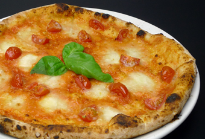
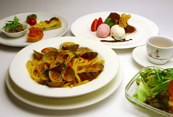
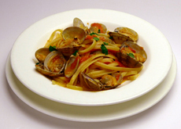
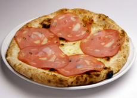
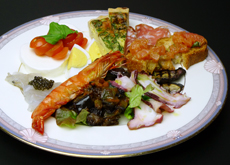
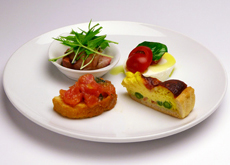
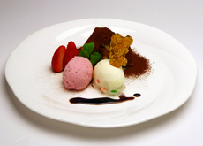
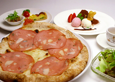
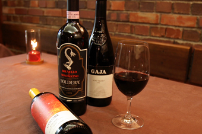
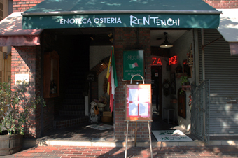

SHOP INFORMATION煉天地
シチリア料理が堪能できるレストラン

倉敷駅から徒歩約7分のところにある「煉天地」は、1978年創業のイタリアンレストラン。イタリアでも特に、シチリア地方の郷土料理を楽しむことができます。シチリア産の素材を使ったパスタや石窯で焼いたピザ、国産の肉を使った料理など、美味しい本格的なイタリア料理を楽しめます。
煉瓦造りの建物の1階にあり、店内も煉瓦造りで統一され、こじんまりとしていてアットホームです。
地中海に囲まれたシチリア料理は新鮮な魚介類が主役

「煉天地」では、瀬戸内海の魚介を使った料理や、シチリア・パッキーノ村でとれたドライトマトを使った料理などが味わえます。
シチリアでは、マグロのカラスミがポピュラーですが、こちらでは瀬戸内海産の鰆をカラスミにしています。
パスタで味わえたり、炙ったものをいただくこともできます。パスタコース：
アンティパストミスト、本日のパスタ、サラダ、パン、デザートの盛合せ、コーヒーorエスプレッソor紅茶
- あさりのリングイーネ
- モルタデラのピッツァ
- アンティパストミスト
おすすめはシチリアの郷土料理
オススメのメニューは、ひよこ豆の粉を練ってペースト状にして揚げた シチリアの郷土料理「パネッレ」、アーモンド・バジル・ニンニク・フレッシュトマトを使ったパスタ「トラパネーゼ」、シチリアのドライトマト・ツナ・野菜を使った「リングイーネのパスタ」など。
デザートは、シェフお手製の「ティラミス」がオススメ。マスカルポーネとほろ苦いエスプレッソの取り合わせが絶妙。食後にぜひ味わってみてください。
- アンティパストミスト
- デザート盛合せ
- ピッツァコース
ワインはソムリエが選ぶ豊富な品揃え

赤・白・スパークリングのワインをなんと約200種類も取り揃えています。ソムリエに、料理に合う最適なワインをセレクトしてもらえるので、ワインの初心者でも安心です。
ワインの他にも、イタリアのお酒グラッパ、レモンチェッロなどもあり、シチリア料理と一緒にイタリアのお酒も楽しめます。
「煉天地」の場所と店内の様子

倉敷駅から徒歩7分、倉敷中央通りに面しアクセスがよく、近くには「東横イン」があります。美観地区・商店街までは1分、観光・お買物・ビジネスに便利な場所です。
煉瓦造りの建物が印象的なビルの1階にある店内は、煉瓦造りで統一され、テーブル席が36席と厨房があり、こじんまりとしていてアットホーム。
壁に飾られたワインボトルやワインの木箱、シチリアの人形やお皿などのオブジェがシチリアの雰囲気を演出しています。
Googleマップでみる
一覧に戻る